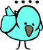
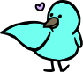

01: Secrets
Brick is confused that Ada is becoming upset, and asks what happened. Ada relaxes a bit, and explains that it feels very protective of its nest and doesn't want anything in it shown to anyone outside its family.
My nest is special to me, and I don't like anyone else to see it unless I have invited them first.
This helps Brick understand, but it still doesn't want to leave quite yet. Brick asks Ada if it might accompany it elsewhere, and Ada mentions it was planning on visiting a friend down by the pond.
I was just about to head down to the pond to see a friend, would you like to join me?
While they are walking towards the pond, Ada becomes curious about Brick's color. Ada wonders if Brick can change color at will, or if it can tell its own color. Ada asks Brick if it can become the same color as Ada's feathers, and Brick replies that red is its color and its color is red, that's how it got its name, and this cannot be changed.
I can't just change my color like that! It's always been like that. Plus, I think it's pretty cool~
Ada is somewhat disappointed because it always considered red an angry color. It didn't want a friend who was always angry. Brick thinks about this for a moment, and then replies that it has a full range of emotions - excited, confused, upset, and so many more! Plus, these change all the time by both internal and external factors. In fact, Ada is making Brick excited right now because they are new friends.

It's not that my color defines my personality. I like to think that my personality defines my color, actually!